Other workshops in Turin and around
Candle, soap, photography, origami, bookbinding, fablab and other workshops in Turin and around.
Search all workshops53 activities coming up · updated on 12 November 2026
- thu12novOtherGrupo de Conversación: Spanish practiceThursday 12 November, 18:00–19:30Vanchiglia (TO)with Libreria Sur
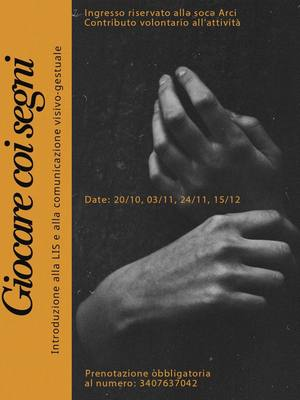
from3novOtherPlaying with signs: Italian Sign Languagefrom Tuesday 3 November to Tuesday 15 December, 18:30Vanchiglietta (TO)with Bocciofila Vanchiglietta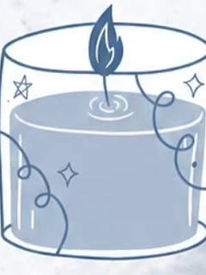
thu12novOtherMake your Moon: a ritual candle and oraclesThursday 12 November, 20:00Moncalieri (TO)with Soffio nel Vento with Tarot With Love- fri13novOtherGrupo de Conversação: Portuguese practiceFriday 13 November, 18:00–19:30Vanchiglia (TO)with Libreria Sur
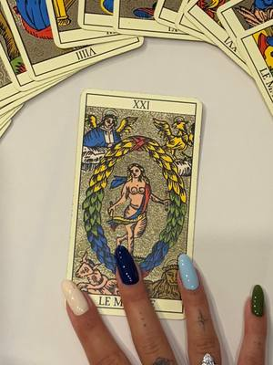
fri13novOtherSuper esoteric workshop: tarot and cardsFriday 13 November, 19:00–21:00San Salvario (TO) · sold outwith Vague Bizarre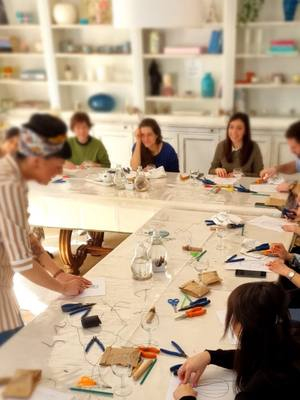
sat14novOtherCandle workshop: make your own candlesSaturday 14 November, 09:00–13:00Borgo Po (TO) · sold outwith Il Tempio Creativo at TObed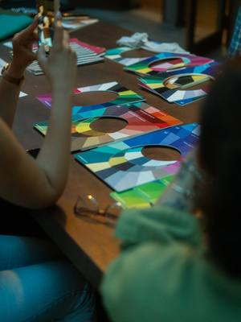
sat14novOtherColour analysis: find your seasonSaturday 14 November, 10:30Quadrilatero (TO) · 39 €with BAO NOW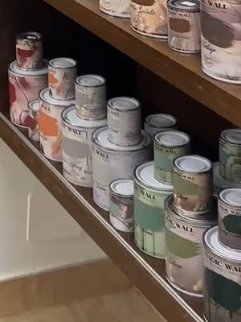
sat14novOtherMagic Paint upcycling: reinvent an objectSaturday 14 November, 11:00–18:00Cit Turin (TO) · 130 €with Me Gusta- sat14novOtherDiscovering the Korean alphabet: your nameSaturday 14 November, 12:00–13:30Aurora (TO)with Spazio Corea at Mercato Centrale Torino
- sat14novOtherLiving Photo Library: stories from a photoSaturday 14 November, 15:00–17:00Collegno (TO) · Freewith Kublaiklan Collective at Leumann Hub
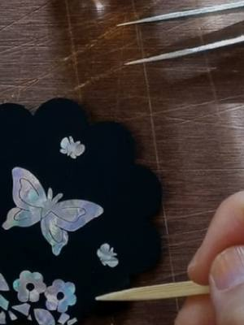
sat14novOtherThe art of mother-of-pearl: a decorated mirrorSaturday 14 November, 19:00–21:00Aurora (TO)with Sonè at Mercato Centrale Torino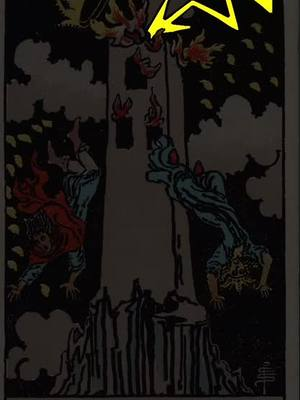
sat14novOtherTarot night: readings with a glass of wineSaturday 14 November, 21:00San Salvario (TO) · from 5 €with Korova Wine Bar- sun15novOtherOne mug, a thousand ideas: sublimation printingSunday 15 November, 10:00Pinerolo (TO) · 30 €with Le Arti di Marti with Il Labirinto di Riri
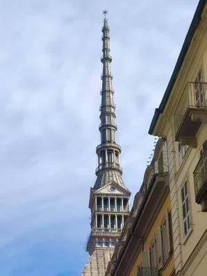
sun15novOtherMontebello Market: 12 free workshopsSunday 15 November, 10:30–17:00Vanchiglia (TO) · Freewith Montebello Market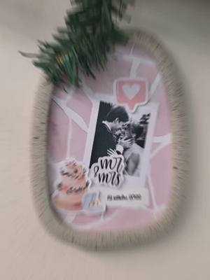
sun15novOtherBreakfast and Christmas baubles: personalised decorationsSunday 15 November, 10:30San Paolo (TO)with Scrapsa Lab- mon16novOtherMoroccan aperitivo and hennaMonday 16 November, 18:30–21:30Quadrilatero (TO) · from 12 €with Nurah Café with WeRoad
- mon16novOtherThe mystery of tarot: symbols and readingsMonday 16 November, 20:00Santa Rita (TO)with Nume Olistica at Anima Atelier
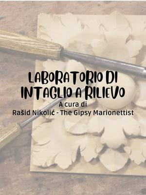
from10novOtherRelief carving: a wooden bas-relieffrom Tuesday 10 November to Tuesday 1 December, every Tuesday, 19:00–21:30Barriera di Milano (TO)with Rašid Nikolić (The Gipsy Marionettist) at Bagni Pubblici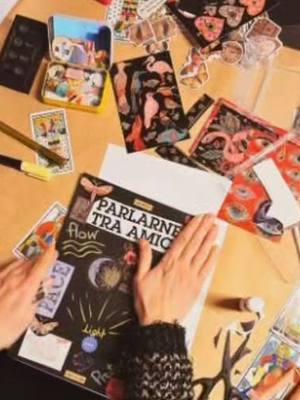
tue17novOtherTarot workshop: a vision boardTuesday 17 November, 20:00–22:00Collegno (TO)with La Strega di Breda at Leumann Hub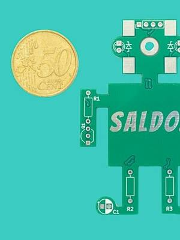
thu19novOtherSaldo!: soldering for beginnersThursday 19 November, 18:00–20:00Lingotto (TO) · from 10 €with Silvio Navaretti at Fablab Torino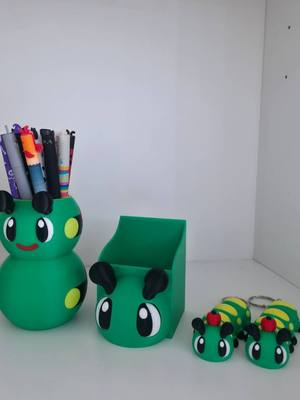
sat21novOther3D printing workshop: a Christmas gift boxSaturday 21 NovemberTurinwith Hiki3D- sat21novOtherChristmas candles: painted holderSaturday 21 NovemberCervasca (CN) · 25 €with Philo Etico at Alcetty Bar
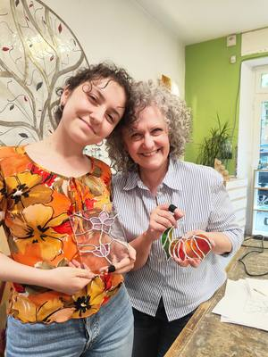
sat21novOtherTiffany glass workshop: your first pieceSaturday 21 November, 10:00–17:00Turin · 130 €with Across the Glass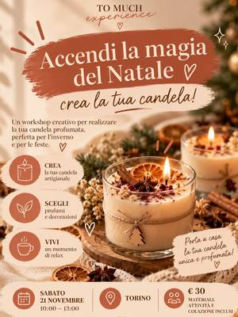
sat21novOtherLight up Christmas: make your own candleSaturday 21 November, 10:00–13:00Turin · 30 €with TO much experience with Effedi Fichi sat21novOtherMake your own perfume: a scent and a creamSaturday 21 November, 10:30Quadrilatero (TO) · 39 €with BAO NOW
sat21novOtherMake your own perfume: a scent and a creamSaturday 21 November, 10:30Quadrilatero (TO) · 39 €with BAO NOW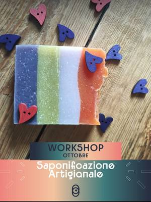
sat21novOtherPractical natural cosmetics: masks and wrapsSaturday 21 November, 16:00–18:30Pinerolo (TO) · 50 €with Courtesia at NODO Concept Space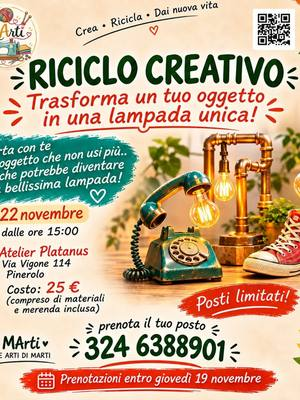
sun22novOtherCreative upcycling: a lamp from an objectSunday 22 November, 15:00Pinerolo (TO) · 25 €with Le Arti di Marti- tue24novOtherChristmas candles: festive gobletTuesday 24 NovemberDemonte (CN) · 25 €with Philo Etico at Locanda Lubac
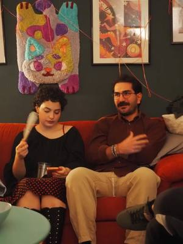
wed25novOtherAppo: poetry meet-upWednesday 25 November, 18:00Vanchiglia (TO) · Freewith Approdo Poetico Torino at Spazio Costanza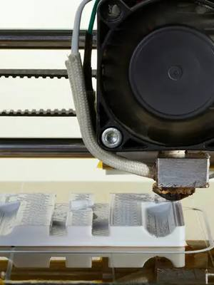
wed25novOtherHow To: 3D printing for beginnersWednesday 25 November, 18:00–19:30Lingotto (TO) · sold outwith Fablab Torino- thu26novOtherGrupo de Conversación: Spanish practiceThursday 26 November, 18:00–19:30Vanchiglia (TO)with Libreria Sur
- fri27novOtherAtelier della Tenuta: candle gobletFriday 27 NovemberBoves (CN) · 40 €with Philo Etico at Tenuta Carpe Diem
- fri27novOtherGrupo de Conversação: Portuguese practiceFriday 27 November, 18:00–19:30Vanchiglia (TO)with Libreria Sur
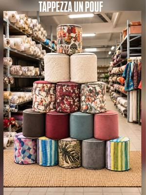
fri27novOtherUpholstery workshop: round poufFriday 27 November, 18:00–20:00Barriera di Milano (TO) · 100 €with Magazzini Tessili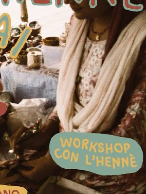
sat28novOtherYoga & Henna & Chai: henna decorationSaturday 28 November, 09:00–11:30Boves (CN)with Flow Studio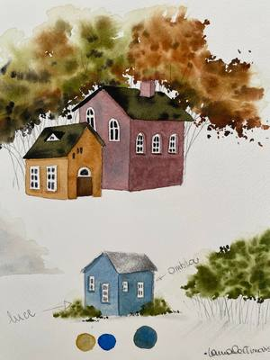
sat28novOtherChristmas lanterns: creative workshopSaturday 28 November, 09:30–17:00Borgo Po (TO)with Laura Cortinovis at TObed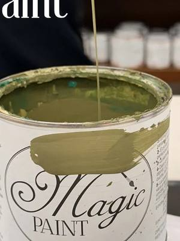
sat28novOtherMagic Paint upcycling: reinvent an objectSaturday 28 November, 11:00–18:00Cit Turin (TO) · 130 €with Me Gusta- sat28novOtherAromatherapy workshop: oils for winterSaturday 28 November, 15:00–19:00Poirino (TO) · 50 €with Erboristeria La Calendula
- sat28novOtherKREA: painted jar and candleSaturday 28 November, 15:30–17:30Pianfei (CN) · 32 €with Philo Etico at Alter Ego
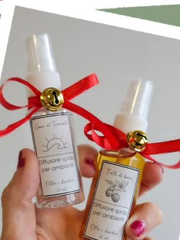
wed2decOtherAperiworkshop: room spray and soy wax scent tabletsWednesday 2 December, 18:30–20:30Centro (TO) · 35 €with Oltre i Desideri at Winelivery- fri4decOtherThe Scent of Presence: natural incenseFriday 4 December, 18:00–20:00San Salvario (TO) · 45 €with Masala Studio with Terra Yoga
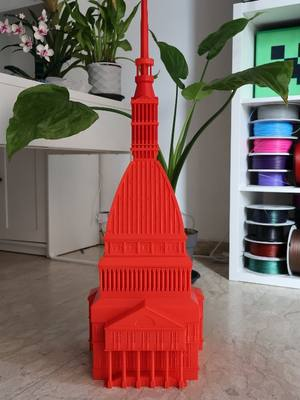
sat5decOther3D printing workshop: a Christmas gift boxSaturday 5 DecemberTurinwith Hiki3D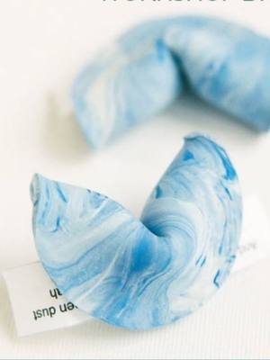
sat5decOtherMake your own fortune cookie: polymer claySaturday 5 December, 16:00–18:00Borgo Vittoria (TO) · 30 €with Oltre i Desideri at Spazio Saper Fare- sun6decOtherWoodwork workshop: mechanical birdSunday 6 December, 11:00–13:00San Salvario (TO) · 25 €with Edelweiss Toys at San Salvario Emporium
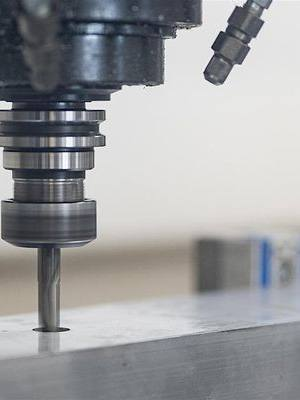
wed9decOtherHow To: CNC milling for ChristmasWednesday 9 December, 18:00–20:00Lingotto (TO) · sold outwith Damiano Frison at Fablab Torino- sat12decOtherTiffany glass workshop: Christmas specialSaturday 12 December, 10:00–17:00Turin · 130 €with Across the Glass
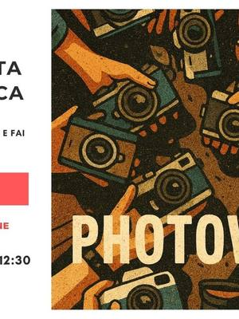
sat26decOtherPhotowalk: exploring the city as a groupSaturday 26 December, 10:30–12:30Quadrilatero (TO) · 2 €with BlaBla Photowalk Events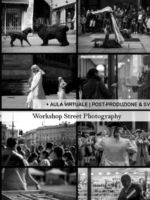
sun31janOtherStreet photography workshop: shooting the citySunday 31 January, 14:00–17:00Centro (TO) · from 55 €with Workshops Fotografici eu with Aldo Diazzi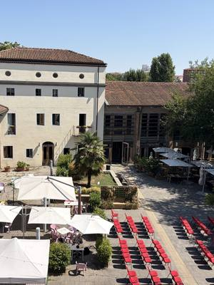
dateTBDOtherCascina Roccafranca: this season’s coursesDate TBDMirafiori (TO)with Cascina Roccafranca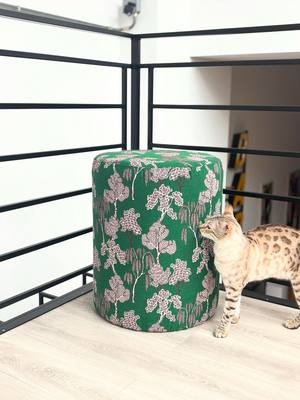
dateof your choiceOtherUpholstery and restyling: poufs and furnitureDate of your choiceBarriera di Milano (TO) · from 20 €with Magazzini Tessili- dateTBDOtherPhotography course: beginner and intermediateDate TBDCentro (TO)with Ivana Sunjic at Polo Le Rosine
- dateTBDOtherPhotography workshop: portrait and lightDate TBDCentro (TO)with Ivana Sunjic at Polo Le Rosine
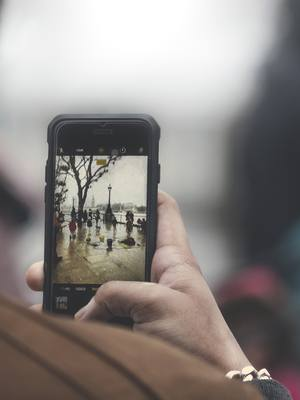
dateTBDOtherPhotography course: capturing an emotionDate TBDSan Mauro Torinese (TO)with Davide Furia at upTOyou